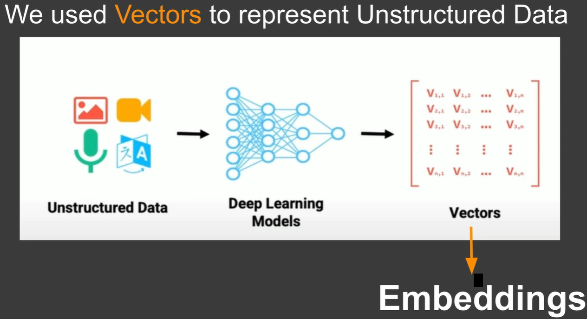
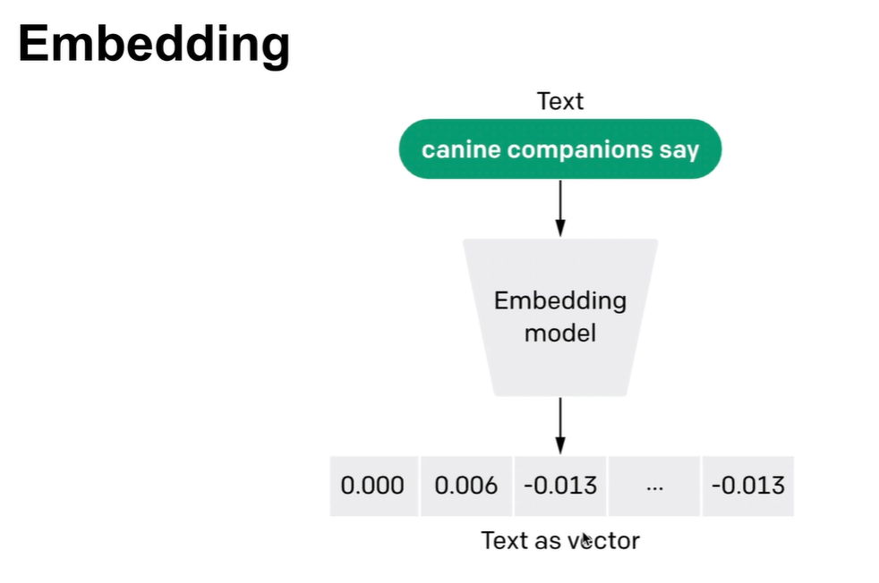

Topic
Chroma DB Notes
Notes on unstructured data, vectors, embeddings, and ChromaDB as an AI-native vector database.
Data
- Data comes in 3 formats: structured, semi-structured, unstructured.
- By 2028, the global datasphere is estimated around 400 zettabytes (1 zettabyte = 1021 bytes). About 80% is unstructured — no fixed size or format.
- How do we analyze data with no fixed size or format? Machine learning (especially deep learning).
Examples of unstructured data
- Sensor data (temperature, GPS, …)
- Machine / system logs
- Internet of Things (IoT)
- Computer vision
- Emails, text messages, social posts
- Audio / video recordings
Vectors and embeddings
- Unstructured data keeps growing — we need indexing and search.
- A vector database stores and searches massive unstructured datasets using embeddings from ML models.
- Embeddings are the heart of a vector database.
- Unstructured input (text, image, audio, video) → embedding model → series of numbers called a vector (also called an embedding).
- Those vectors are stored in the vector database.


ChromaDB
- AI-native open-source embedding database
- Built-in capability for embeddings
Distance function
-
ChromaDB’s
distancefunction measures difference between items in a collection — important for similarity queries. - Default is L2 (Euclidean distance).
- Cosine similarity compares vectors by the cosine of the angle between them — useful for high-dimensional, sparse text data.
Change the distance metric when creating/getting a collection:
# changing distance calculation metric to cosine similarity
collection4 = client.get_or_create_collection(
name="collection4", metadata={"hnsw:space": "cosine"}
)